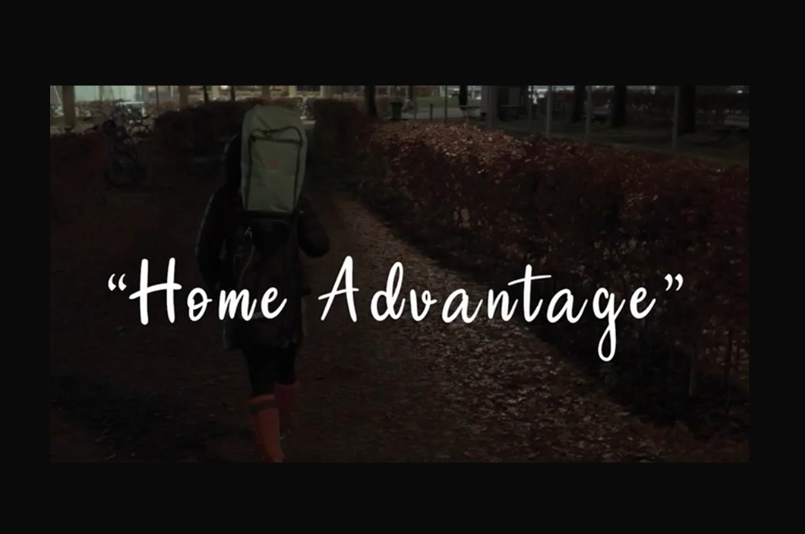

Home Advantage – Documentary Development & Marketing
Brief Overview: Short documentary concept highlighting the inspiring story of a disadvantaged girl in a field hockey club. The project emphasized the resilience and passion of disabled athletes while developing a targeted marketing plan to promote the documentary.

Project Details
-
My Role:
Marketing Strategist, Project Coordinator
-
Tools & Skills:
Marketing Strategy, SOSTAC, Audience Analysis, Budget Planning
-
Timeline:
Project Development Phase
-
Client/Context:
University Documentary Project
My Contributions
check_circle Marketing Plan Development
Created a comprehensive marketing plan using the SOSTAC method, aligning strategy with the documentary’s goals and budget constraints.
check_circle Audience Engagement Strategy
Developed promotional ideas, identified target audiences, and proposed strategies to maximize engagement and visibility for the documentary.
The Final Deliverable
Watch the documentary below or view the marketing plan.
Reflection & Results
lightbulb What I Learned
Refined my skills in documentary marketing, audience targeting, and budget allocation while reinforcing strategic planning abilities.
trending_up Outcomes & Impact
Produced a clear and actionable marketing plan complementing the documentary. Enhanced my ability to create strategies that effectively communicate socially-driven stories.